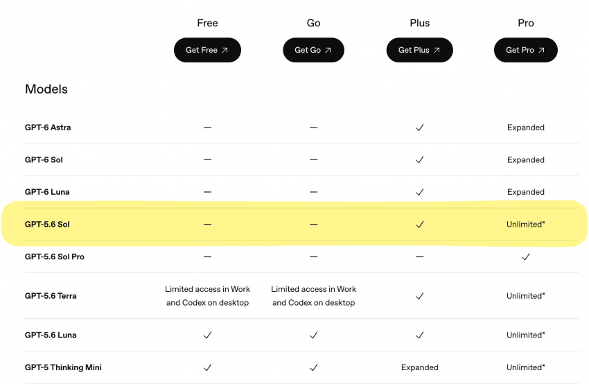

5.6 sol 무제한 제공 예정

5.6 sol 무제한 제공 예정
AI 잘 몰라서 GPT 플러스로 쓰고있음
주요 사용처는 엑셀 시트 만들때 도움받는거나
여행 계획짤때 일정 맞추거나 추천 받을때
그리고 일상생활 궁금한거 물어보는 중
계속 사용해도 좋을까?
유료가 딱히 필요 없어보임
플러스 구독도 굳이 필요 없을 용도로 사용하고 있어보임
예아
어짜피 지금 오푸스 5.5가 워낙 잘나와서 애지간한거 다줘패는중
속도를 줄이니 뭐니 염병을 하더니 ㅋㅋ 역시 누가 먼저 기득권 잡나 치열한 싸움이구만 ㅋㅋ
재미나이 어떻하냐 ㅋㅋ 3.8 플래쉬 무료제공인데
5.6솔 다 뒤졌다 코딩 개돌린다 ㅋㅋㅋ
6 아스트라 때 당황하지 않고 클로드 유지하길 잘했다